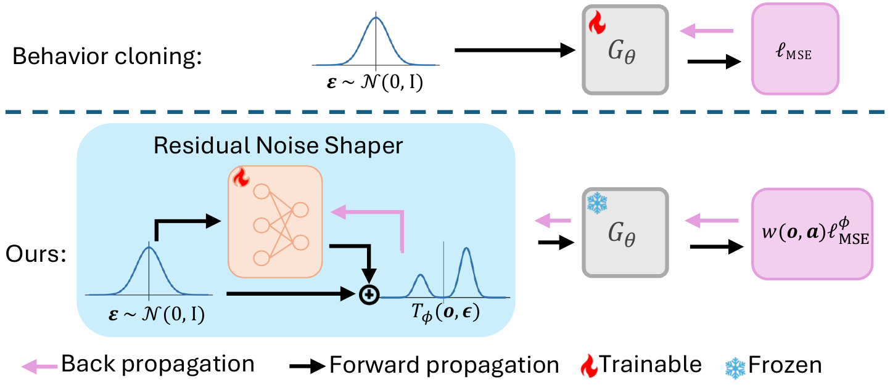

AWLS policies on all five real-world tasks, each shown once with a full view alongside a zoom-in. Clips are sped up and have no audio.
Three single-arm and two dual-arm tasks, in the order they appear above.
5 real-robot tasks · 20 hardware rollouts each · no real-world rollouts during post-training · a rollout counts only if every stage completes without human intervention.
| Method | Drawer-Cube | Tube Ins. | Screw Scoop. | Gear Pack. | Ball Weigh. | Total |
|---|---|---|---|---|---|---|
| MeanFlow | 12/20 | 11/20 | 13/20 | 4/20 | 5/20 | 45/100 |
| FQL | 13/20 | 14/20 | 15/20 | 5/20 | 4/20 | 51/100 |
| DSRL | 12/20 | 15/20 | 13/20 | 6/20 | 4/20 | 50/100 |
| AWLS (ours) | 15/20 | 17/20 | 16/20 | 9/20 | 8/20 | 65/100 |
Human-collected real-world robotic manipulation demonstrations often contain mixed-quality trajectories, including hesitant, indirect, or inefficient action segments. While diffusion- and flow-based policies can model such multimodal data, standard behavior cloning (BC) assigns equal likelihood to all demonstrated actions and may therefore reproduce suboptimal modes. Offline RL value estimates offer a natural signal for biasing policies toward higher-value behavioral modes, but directly fine-tuning the generative policy or using critic gradients for policy steering can amplify critic errors and induce prior drift. We propose Advantage-Weighted Latent Steering (AWLS), an offline post-training method for improving frozen one-step generative manipulation policies without updating their decoders. AWLS learns a residual noise shaper, an observation-conditioned residual correction to the policy’s latent noise, and trains it with an advantage-weighted action reconstruction objective. The advantages are detached, scale-normalized, and used only as supervised weights on demonstrated actions, avoiding critic-gradient policy updates while preserving fast single-step inference. We further introduce a rollout-free decoder-sensitivity criterion for selecting pretrained checkpoints that remain responsive to latent-noise perturbations. Experiments on simulated and real-world robotic manipulation tasks with clean and mixed-quality demonstrations show that AWLS improves over the frozen base policy while limiting drift from the pretrained behavior prior.
Keep the decoder frozen; learn a small residual correction to its latent noise.

The AWLS pipeline: a frozen one-step decoder with a trainable residual noise shaper.
AWLS treats the pretrained one-step decoder Gθ as fixed and inserts a lightweight, observation-conditioned residual noise shaper Tφ(o,ε)=ε+Δφ(o,ε) on the latent input. Only Tφ is trained—the pretrained decoder parameters stay fixed and inference remains a single decode. The training signal is an advantage-weighted reconstruction loss: IQL advantages are detached, scale-normalized to [0,1], and exponentiated into per-sample weights, so the critic never back-propagates into the policy.
Value enters only as supervised weights on demonstrated actions, avoiding direct critic-gradient steering and limiting prior drift.
A small network reshapes the latent; the decoder is frozen, so inference remains a single forward pass.
A rollout-free criterion selects pretrained checkpoints that stay responsive to latent-noise perturbations.
@inproceedings{tang2026awls,
title = {{AWLS}: Advantage-Weighted Latent Steering for One-Step Generative
Robotic Manipulation Policies},
author = {Tang, Jiahong and He, Jiaju and Yang, Zhiyuan and Han, Ruyang and Zhu, Haiyue},
booktitle = {Conference on Robot Learning (CoRL)},
year = {2026}
}